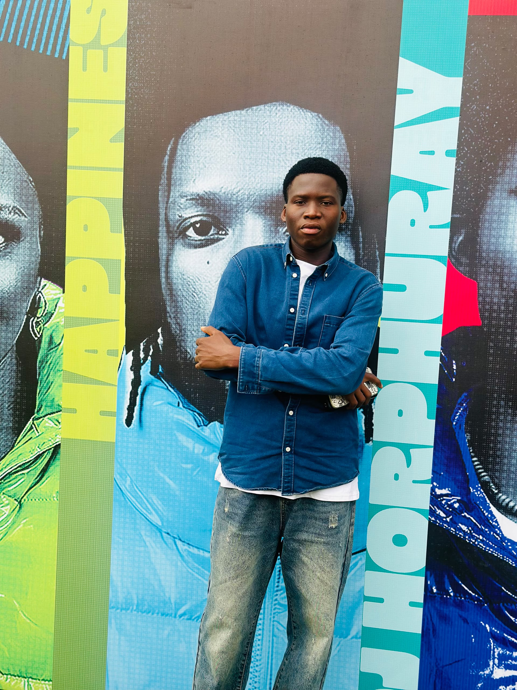

Welcome
Hi, I'm Ikechukwu.
I'm a Cyber Security student at MIVA Open University who builds clean, useful things for the web.
I created this site to share my skills and projects, and to keep track of my coursework in one place. Browse around, or jump straight into the planner I built.

A short biography
I am a 100-level student with a growing interest in web development and problem solving. I enjoy turning ideas into working interfaces, and I learn best by building. Outside class I read about technology, play football and help classmates with their assignments.
At a glance
- CourseB.Sc. Computer Science
- FocusFront-end web development
- LocationLagos, Nigeria